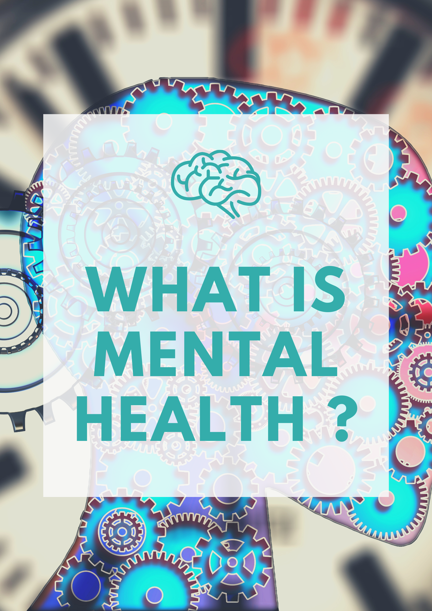
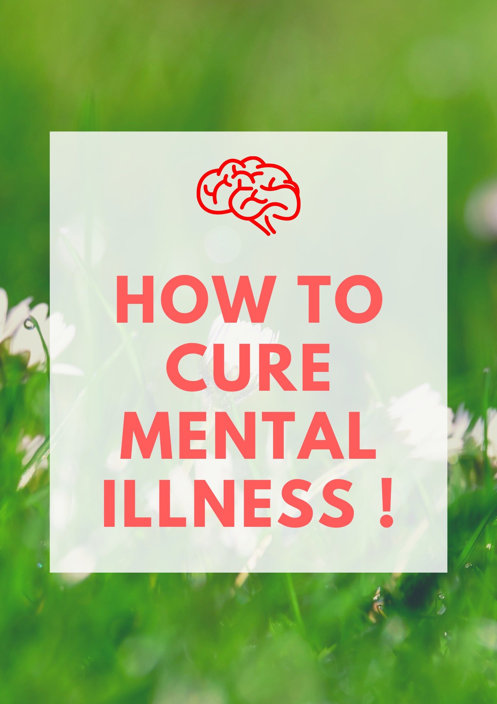

#INTRO
Mental health is integral to living a healthy, balanced life. According to the National Alliance of Mental Illness
(NAMI), one in five American experience mental health issues which translates to more than 40 million adults a year.
Our mental health encompasses our psychological, emotional and social well-being. This means it impacts how we feel,
think and behave each day. Our mental health also contributes to our decision making process, how we cope with stress
and how we relate to others in our lives.
#WHY IS EMOTIONAL HEALTH IMPORTANT ?
Emotional and mental health is important because its a vital part of your life and impacts your thoughts, behaviors and emotions.
Being healthy emotionally can promote productivity and effectiveness in activities like work, school or caregiving. It plays an important
part in the health of your relationships, and allows you to adapt to changes in your life and cope with adversity.
#HOW CAN YOU IMPROVE YOUR EMOTIONAL HEALTH DAY-TO-DAY ?
There are steps you can take to improve your mental health everyday. Small things like exercising, eating a balanced and healthy meals,
opening up to other people in your life, taking a break when you need to, remembering something you are grateful for and getting a good
nights sleep, can be helpful in boosting your emotional health.
#WHEN IS A GOOD TIME TO REACH OUT FOR HELP ?
Issues related to mental health can impact different people in different ways. If you start to see changes in your overall happiness and
relationships, there are always ways get the support you want. Here are some ways you can get help:
* Connect with other individuals, friends and family - Reaching out and opening up to other people in your life can help provide
emotional support.
* Learn more about mental health - There are many resources you can turn to for learning more about emotional health. Some examples
include Psychology Today, National Institute of Mental Health, and Anxiety and Depression Association of America.
* Talk to a professional - If you start to feel like your emotional health is starting to impact you, it may be time to reach out for
extra support. With Doctor On Demand, you can see a psychologist or psychiatrist and find the personalized support you want.
Lastly, you can also learn more about taking care of your mental health on our blog. Discover ways to take a healthy approach to your
emotional wellness, as well as understand issues like depression and how it can affect men and women differently. Read more articles by
our caring team of psychologists and psychiatrists here to help support a healthy mind and lifestyle.
#KNOW MORE ABOUT MENTAL HEALTH :
